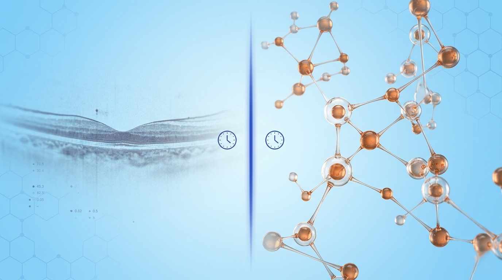
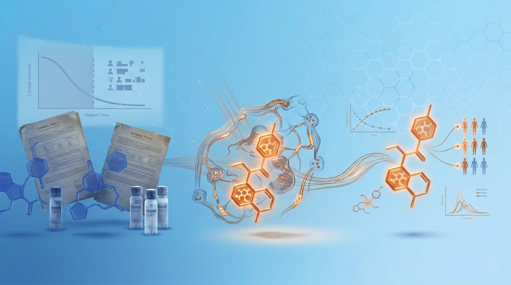

Patient Heterogeneity
Broad enrollment criteria dilute therapeutic signal with non-responders, leading to missed endpoints.
ClinOmicsAI provides biotech companies with AI-powered proteomic intelligence to predict therapeutic response and guide precision drug development
In ophthalmic drug development, clinical endpoints often fail to capture the underlying molecular reality. The primary driver isn't a flawed drug — it's biological variability within patient populations that buries efficacy in noise.
Broad enrollment criteria dilute therapeutic signal with non-responders, leading to missed endpoints.
Current endpoints rely on subjective imaging that is slow to show change and fails to capture molecular mechanisms.
Major assets from Genentech, Ophthotech, and others have failed — not because the science was wrong, but because trials weren't designed to find the right patients.
How We Address It
ClinOmicsAI helps biotech sponsors of ophthalmic therapies de-risk drug development with direct, biomarker-guided answers to each driver of clinical-trial failure — turning unstructured uncertainty into measurable, regulatory-defensible signal.
Identify the patients most likely to respond before they enter the trial — using proteomic signatures that capture the biology of disease and treatment sensitivity.

Detect molecular shifts in cellular pathways months before conventional imaging endpoints can show change — quantitative, objective, biology-anchored.

Re-analyze biobanked samples from failed trials to recover the responder signature — turning a written-off candidate into a de-risked, biomarker-guided opportunity.
What We Do
From scientific approach to operational deployment — how proteomic intelligence becomes drug-development advantage. Explore the full Technology page to go deeper.
01
AI-powered proteomic intelligence that predicts therapeutic response and guides precision drug development — identifying responders, projecting Phase 3 P.O.S., and unlocking asset value.
Explore Our Approach →02
A four-step proteomic workflow — microvolume collection, ~6,000-protein analysis, cellular-origin mapping, and AI-powered insights — from sample to actionable intelligence in 6–8 weeks.
Explore the Platform →03
A phased engagement model — Discovery, Validation, Enrichment — plus the Lazarus Effect: re-analyzing biobanked samples from failed trials to recover the responder signature.
Explore Our Solutions →Behind the Platform
Meet the vitreoretinal-surgeon-scientist team building ClinOmicsAI — and see the clinical trials currently advancing the platform across continents.
Co-founded by Dr. David R.P. Almeida (President & CEO of CASExGLOBAL, founder of Erie Retina Research) and Dr. Vinit B. Mahajan (Vice Chair for Research, Stanford Department of Ophthalmology) — vitreoretinal surgeon-scientists with extensive clinical-trial leadership, hundreds of peer-reviewed publications, and a track record of building precision-medicine platforms.
Meet the Team →Five active and planned trials — OPTICA, PRIDE, BOLT, NOOR, ROVER — advancing across the United States, Brazil, the Philippines, Saudi Arabia, and India. Indications span dry AMD, diabetic retinopathy, neovascular AMD, and uveitis.
See the Pipeline →Get in Touch
Whether you're a pharmaceutical sponsor exploring biomarker-guided trial design or an academic partner interested in collaborative research, we'd like to hear from you.
Get in Touch